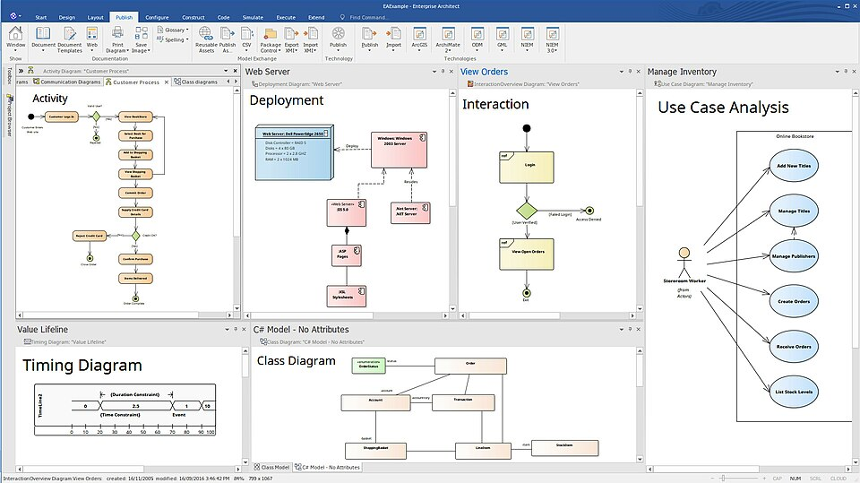
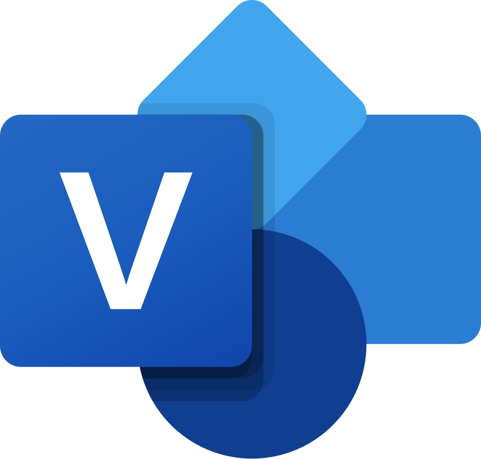
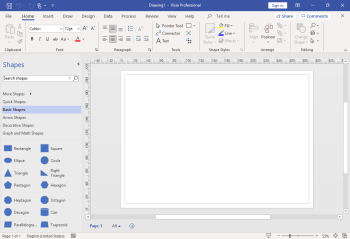

Ülemise taseme CASE vahendid on vahendid, mis toetavad analüüsi ja projekteerimist
Need on peamiselt kasutusel kasutajanõuete analüüsimisel ja dokumenteerimisel. Nad on ennekõike mõeldud visualiseerimiseks, skeemide koostamiseks ja
dokumentatsiooni genereerimiseks
Mina olen ise kasutanud näiteks google docsi ja Painti
Sparx Systems Enterprise Architect

Enterprise Architectiga saab teha visuaalskeeme

Microsoft Visioga saab teha diagramme Allikas